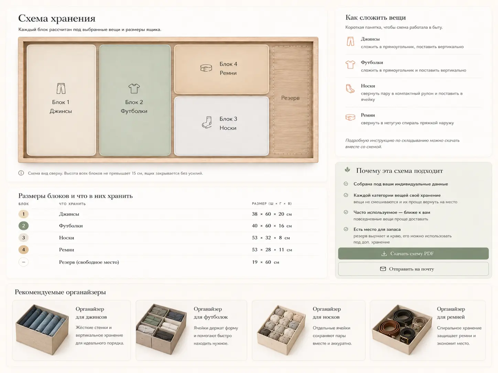

Обычно порядок в комоде начинают с покупки органайзеров. Вы смотрите красивые фото, пытаетесь рассчитать размеры, собрать всё в понятную схему, выбираете набор, сверяете размеры и надеетесь, что дома всё встанет так же аккуратно.
Но ящик редко ведёт себя как картинка из карточки товара. У него есть своя ширина, глубина и высота. У вещей — разный объём и форма, разная частота использования. Носкам нужны одни секции, белью — другие, а бюстгальтеры нельзя сильно сжимать.
«Уместно» работает иначе: сначала не товар, а схема.
01 — ИдеяЧто делает «Уместно»
«Уместно» помогает собрать схему хранения для конкретного ящика: по Вашим размерам и вещам, которые Вы хотите там хранить.
Сервис не даёт общий совет «купите органайзер для белья» и не предлагает случайную подборку товаров. Он показывает, как может быть устроен именно Ваш ящик: какие зоны нужны, что где хранить и как разложить вещи, чтобы ими было удобно пользоваться каждый день.
Главная задача — не просто сделать красиво. Важно, чтобы вещи помещались, не перемешивались после стирки, ящик нормально закрывался, а порядок было легко поддерживать.
02 — ДанныеКакие данные нужны
Для расчёта схемы нужно указать три внутренних размера ящика:
- ширину;
- глубину;
- полезную высоту до закрытия.

Именно внутренние размеры важнее внешнего размера комода.
Затем Вы выбираете, что хотите хранить: бельё, носки, бюстгальтеры, колготки, майки, домашнюю одежду, аксессуары или детские вещи. Ещё нужно указать примерный объём: мало, средне или много. Для каждого типа вещей есть подсказка по количеству.
Также можно указать приоритет хранения:
| Приоритет | Что делает система |
|---|---|
| Удобно | рассчитывает раскладку так, чтобы вещами было проще пользоваться каждый день |
| Вместительно | располагает вещи максимально плотно, чтобы поместилось больше |
| Экономично | рекомендует бюджетные варианты органайзеров |
И всё. Этого достаточно, чтобы сервис понял не только размер пространства, но и сценарий хранения.
03 — РасчётКак собирается схема
- Сначала «Уместно» определяет, какие зоны нужны вещам с учётом индивидуальной особенности каждой категории.
- Затем сервис собирает раскладку внутри ящика: что лучше разместить ближе к переднему краю, какие категории можно поставить рядом, где нужна отдельная секция, а где лучше оставить открытую зону.
- После этого схема сверяется с реальными способами хранения: органайзерами, коробами, разделителями или свободными зонами из базы, собранной с популярных маркетплейсов.
Мы не берём оплату, если вещи не помещаются в ящик и собрать схему не получается. Система сначала проверяет возможность расчёта и только потом перенаправляет на оплату.
Поэтому результат «Уместно» — это не абстрактная схема ради схемы, а попытка соединить три вещи: Ваш ящик, Ваши вещи и реальные варианты хранения.
04 — КачествоЧем хорошая схема отличается от красивой картинки
Для «Уместно» важно не просто нарисовать аккуратный ящик, а чтобы схема была максимально реализуемой в реальной жизни. Хорошая схема должна пройти четыре проверки.
Она должна выглядеть спокойно
Без случайных мелких кусочков, перекошенных зон и ощущения, что пространство собрали наспех
Вещи должны действительно помещаться
Носки не расползаются по ящику, бельё не теряется в общей куче, а бюстгальтеры не сжимаются так, что чашки теряют форму
Схему должно быть понятно повторить
Не просто «здесь зона для белья», а что именно поставить, сколько места оставить и куда сложить каждую категорию
Ящиком должно быть удобно пользоваться
Открыть ящик, взять нужную вещь, вернуть чистое после стирки. И не собирать порядок заново каждую неделю
05 — РезультатЧто Вы получаете
В результате Вы получаете три вещи:
Схема ящика сверху
С зонами, размерами блоков и подсказками, что где хранить.
Как складывать и хранить
Памятка по складыванию и хранению каждого типа вещей.
Подходящие органайзеры
Рекомендации со ссылками на популярные маркетплейсы — достаточно кликнуть по карточке.

06 — КогдаКогда «Уместно» особенно полезно
Сервис пригодится, если Вы хотите организовать хранение в комоде, но не хотите начинать со случайных покупок. Особенно если ящик нестандартный, вещей много, категории смешанные или у Вас уже был опыт, когда органайзер не подошёл по размеру.
«Уместно» помогает не просто придумать красивую раскладку, а довести её до бытового результата: чтобы вещи поместились, зоны выглядели спокойно, было понятно, что куда поставить, и ящиком было удобно пользоваться каждый день.
Иногда порядок начинается не с покупки, а с логики хранения.